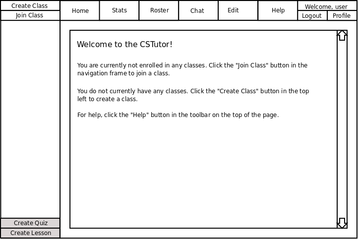

After the user logs in, CSTutor presents the Home screen shown below in Figure 2.1-1 to instructors and 2.1-2 to non-instructors.

Figure 2.1-1: Instructor Initial screen.
Figure 2.1-2: Student Initial screen.
Home:
The Home button takes the user to a screen that displays the user's recent history.
It also contains some generic helpful links to commonly used tasks.
The navigation bar on the left displays a list of all classes (as well as the lessons contained within
the classes) to which the user is currently a member.
Stats:
This button takes the user to a page that shows statistics. Students may only view
their own statistics but Instructors can view classwide statistics as well as
individual statistics. For more information see the Statistics section.
Roster:
CSTutor only displays this button to users with manage permissions. This button takes the user to the
Roster which provides functionality to add/remove users,
and modify permissions. For more information see the Roster section.
Chat:
This button takes the user to an embedded chat window. Each class contains it's own IRC channel that allows
Students to converse with each other and the Instructor. For more information see the
Chat section.
Edit:
CSTutor only displays the Edit button to users with edit permissions on the current class.
When navigating lessons users with edit permission have the option of clicking the Edit button
to edit the contents of the current lesson. See the Editing Lessons
section.
Help:
This brings the user to a general help page.
Logout:
This button logs the user out and brings him to the Login screen.
Profile:
This button takes the user to a page in order to edit their profile (profile information currently undecided).
Create Class:
CSTutor only displays this button to Instructors. The Create Class button takes the Instructor to the
Create Class page.
Join Class:
This button brings up the Join Class page. Here you may
join public classes, request access to private classes, and join private classes to which you have access.
The Nav Bar:
The Nav Bar displays a list of all classes to which the user is currently a member. A
user can navigate through the lessons by clicking the + symbol to the left of
the topic to expand and view sub-lessons. If the user wishes to collapse a topic he must simply
click the - symbol next to the topic. To view a lesson, the user must click
on the name of the topic he wishes to see.
The Nav Bar(Edit Permissions):
In addition to the content above, CSTutor displays the Create Lesson and Create Quiz
buttons to users with edit permissions on the currently selected class. For more information
see the Creating a New Lesson page.